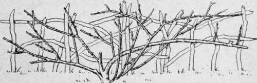

Chapter XXIV. Daily Routine And Seasonable Work
Description
This section is from the book "Town Gardening", by Mary Hampden. Also available from Amazon: Town Gardening.
Chapter XXIV. Daily Routine And Seasonable Work
OBTAIN ingredients for potting and seed-sowing compost, and clean pots, pans, boxes, etc. Prepare crocks for drainage by breaking up broken flower-pots and passing the pieces through wire sieves, keeping large, medium, and very small crocks separate.
Prepare ground for sweet-peas. Manure and dig beds and borders that are vacant. On wet days see if the tiffany sheets or greenhouse blinds need mending.
Order seeds and plants in good time. Thin out overcrowded shrubberies or remove shrubs that are failing through being below tall trees.
Fumigate greenhouses.
Clean out frames. Scatter carbolic liquid beneath frames, which should always be slightly raised on bricks, if with flooring. Frame sides and ' lights ' put over beds will rot unless painted with tar just where the wood presses on the earth.
Surround pot plants or seed-boxes in frames with a few inches of sharp cinders. Begin to lay leaf traps for slugs, and go out to examine them at nightfall.
Special Work For February
Examine foliage of all large-leaved pot plants, and the shoots of liliums, to see if any green-fly is upon them. If so, sponge with water made lathery with carbolic soap, and wash off half a day later.
Buy a blossoming laurestinus shrub for window by day and for the dinner-table by night, for the scent will be delightful. Stand the shrub out of doors during summer.
Old fuchsias may be started. Repot them, using turf-loam, leaf-mould, and a little sand, but use pots the same size, or rather smaller, after cutting away any diseased or dead roots. There is no need to try to preserve the lower half of each ball of soil when turning the old plants out of their pots. Put them in a greenhouse, where the temperature is 6o° or more, or place inside a south window, and keep watered and sprinkled. They may be cut into shape at the same time.
Perennials in the garden can be divided and replanted, if they are hardy sorts and the weather permits.
If any pot plants become frozen, shut them in a dark cupboard for a day to thaw, after sprinkling them with cold water.
Special Work For March
Prune old pot geraniums into shape, and use the parts removed as cuttings. Cut them just below a slightly woody bit of stem, if possible. Insert a third of the length in very sandy loam, press in firmly, stand close to glass, keep the soil from drying up, but do not water much.
Scatter finely-chopped decayed horse manure evenly over lawns, grass edgings, etc. Sweep the grass in a week's time if there have been rainfalls to wash the goodness in, if not, bear with the unsightliness a little longer.
Many mulches have to be given in March, in accordance with instructions in previous chapters ; rose-trees and flowering shurbs must not be forgotten.
Prune the very hardiest roses at the end of the month. Wall climbers (other than Banksian yellow and Banksian white, which must not be touched till they have bloomed) are to be dealt with first. Merely tip the shoots, and remove overcrowding boughs and weak little twiggy growth. Rambler roses can be tipped and thinned out. Hardy perpetual standard and bush roses ought to be pruned by an expert, but the general rule is to limit the number of chief boughs, removing the weak ones, and then cut the shoots from those boughs back to within six to twelve inches of the main stem ; some immense old bushes would be spoilt, for garden effect, if reduced too much.
Many rose-trees in borders can have some of their long young branches stretched out on each side to espalier supports, thus making a kind of hedge and leaving the centre branches ample space.
Old Rose-tree Trained to Espalier.
This is a fit month for planting roses. Plant hardy perennials.
Divide and remake edgings of double daisies (Bellis perennis), London pride, thrift, etc.
Start fern-balls into growth by soaking them very thoroughly and hanging them in warm positions against glass.
Special Work For April
Plant ivies. The best way is to stretch the new plant along the surface of the soil against the wall or fence, and peg it down here and there. A climber so treated will actually get up the wall faster then if it had been nailed up it at once.
Repot ferns and all other plants that need it.
Sow pots with hardy annuals ; sow hardy annuals out of doors ; sow pans, boxes, and pots of half-hardy annuals and perennials, placing receptacles in greenhouse, frames, or windows. Fill window-boxes with soil ready to plant with ' summer stuff ' in May. *
Sow grass seed or lay turves.
Sow swreet-peas out of doors.
Top-dress the herbaceous border and shrubberies.
Lawn-mowing will have to be done when the grass is not too wet. Sweepings and rollings should be frequent.
Plant carnations, clematises, Virginia creepers, jasmines, Japanese honeysuckles, if desired. Make new violet beds.
Aralias and palms are only to be repotted when roots are showing at the base of pots, or when the balls of soil are found to be closely matted with roots. To ascertain this, the fingers should press the crocks upwards, through the drainage hole (after the plant has been watered by immersion in tepid water up to the pot's rim), till the whole balls of soil will move, and slip out into the palm of one hand, or on to the knee in the case of a giant specimen. It would not be possible to move a plant out in this fashion while dry ; the tepid water loosens the roots' hold on the sides of the pottery. If the palm does not need repotting it should be gently lowered back into the same pot and top-dressed with a little fresh compost. The florist will supply proper compost for palms, or the gardener may use equal parts of fresh loam and peat, with a sixth part of silver sand.
Plants of all sorts should be thoroughly watered, then left to partially dry, before they are repotted.
Palms, aralias, aspidistras, castor-oil plants, etc., often go brown at the tips. This is a sign that some roots are partly diseased, owing to sourness of soil. It is advisable to repot, but to use as small a fresh pot, or one a size smaller, if possible. As a rule, these plants, excepting aralias, only need repotting every third year, but disease renders a shift essential.
Ivy should be trimmed on walls and fences.
Prune clematis Jackmanii by shortening last year's shoots two-thirds of their length.
Sponge all large, shiny-leaved pot plants, including palms and aspidistras, with tepid milk and water, to give the leaves a gloss.
Repot cacti, when absolutely necessary, giving only a very little more room. Use a compost of two parts loam, half a part of old chopped cow manure, half a part of coarse sand, half a part of crushed mortar or white bricks.
Sow mignonette in pots or window-boxes. It seldom succeeds in real town-garden borders. Add a quarter part of crushed mortar to the ordinary loam, leaf-mould, and sand compost; or builder's lime, a dessertspoonful to a pint, will do instead.
Now is the time to remove some buds from rose-trees, in order that others may grow into fine blooms. Keep suckers removed from the base of rose-trees, but take care that they are briar-growth, not new shoots of the roses. There are so many different ' stocks ' used now that no rules can be laid down absolutely as to how to recognize suckers from the briar; however, the leaves are generally a great deal more toothed than those of the rose, and are a different shade, so the careful gardener will learn to discriminate. Syringe rose-trees with a solution of four ounces of quassia chips in a gallon of soft water ; after it has stood for a day the addition of two ounces of soft-soap, and two more gallons of water, is excellent for a second syringing, a week later. Always syringe with plain water twelve hours or so after using any insecticide.
Continue to: